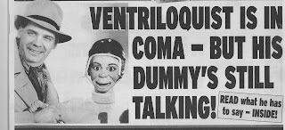

Read it and believe it ... or not!
8/20/2011
{kind=link}

The January 1, 2002 issue of Weekly World News carried the amazing headline about a ventriloquist in a coma whose dummy was still talking! It took place in Germany. It seems ventriloquist, Ernest Fleener, was rushed to the hospital as a result of an auto accident where he spent a month in a deep coma. But doctors and nurses reported that they heard a muffled voice coming from the patient's suitcase, requesting a "sponge bath", and "Hey girlie, carve your phone number into my arm!", or "Wooden you like to spend some time with me?"
Theories as to what caused such a highly unusual occurrence included the fact that there was an unstable ion storm passing over northern England at the time of the accident. Scientists conjecture the powerfully charged particles could have caused an event referred to as the "Pinocchio Syndrome," named for particular effects these ions have on wood.
Believe it ... OR NOT! But it is true that this report was actually published in the Weekly World News and George Boosey has provided a copy as a prize in today's drawing. The winner (depending upon how you view this unique prize) is: Gay Morgan